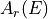
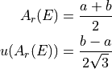
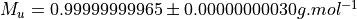
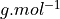

Standard Atomic Weights¶
The standard atomic weights (or realtive atomic mass), , are extracted from table 1 in Prohaska et al. [1]. For the elements that feature an interval for the standard atomic weight, the mean value and the uncertainty are computed using formulas defined in van der Veen et al. [2]:

The standard atomic weights are a dimensionless quantity and thus they need to be multiplied by the molar mass constant  in order to get the value in .